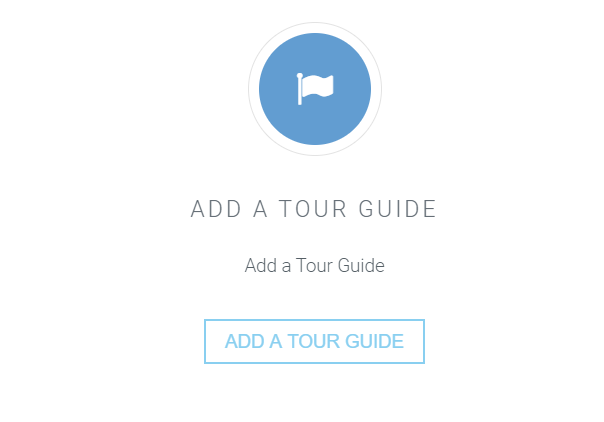
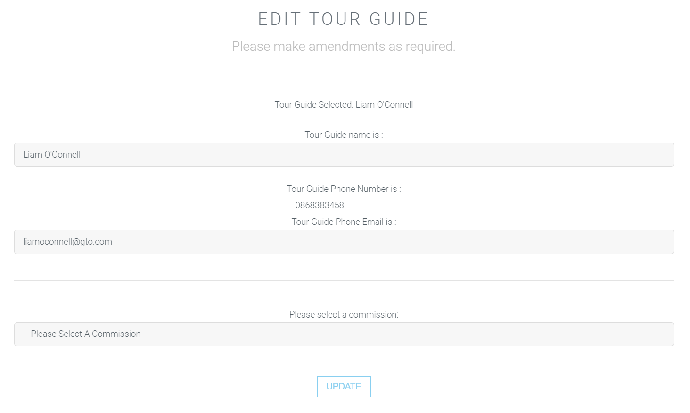

To add a new tour guide, visit the Tour Guides page, by either selecting Tour Guides on the Homepage, or by selecting Tour Guides on the navigation on the top of the site.
Once you have loaded the page, scroll down the page to the bottom, and you will see a box with a link that will redirect you to add a tour guide.
To add a tour guide you must supply a tour guide name, phone number, email address, select a commission level and click the "add tour guide" button.
Once this has been provided, the page will automatically refresh and you will be able to see the new tour guide alongside all the tour guides stored in the database.

Yes! A tour guide can be deleted by simply selecting a tour guide you would like to delete on the table that allows you to view all of the tour guides.
You will be asked to confirm if you would like to delete the tour guide once you have selected the bin icon.
If you want to delete the tour guide, click "ok" and the table will refresh and the tour guide that was selected will be deleted.
Yes, it is possible! Just click the pencil button on the table and it will redirect you to an edit section.
You will be able to edit the tour guide name, phone number, email address and commission level here, and click the submit button provided in order to save your changes.

To change the active status of a tour guide, just click the either the tick or 'x' button to change it.